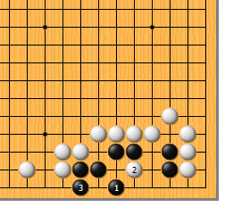
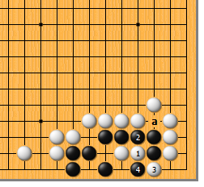
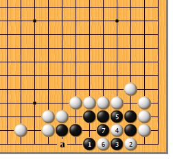
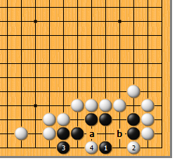
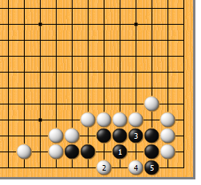
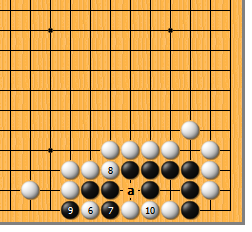
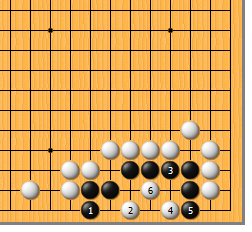

|  |  | |
| 图1 黑1是此形的要点！白2如点，黑3立，活。对白2能否渡过，再看一看吧……
| 图2 白1长、3渡，众目睽睽。然而黑4扑，白恰好接不归。实力稍强的朋友可能早就注意到a位空了一气，否则白1于2位冲，势不可挡。 | |
|  |  | |
| 图3 黑1尖时，白2如扳，黑3也扳，寸土不让！白4如果敢断，黑5、7可吃接不归。当然，黑3下在7位或a位，也是活棋，但稍软。 | 图4 黑1如跳，形不正。白2扳，要点。黑3如立，白4靠，好手筋！以后，黑a则白b，应该算到了吧？
| |
|  |  | |
图5 黑1如曲，白要好好地算一下。如于3位冲，黑2位做眼，可以活一半。然而，白2点，更狠！黑3扩大眼位，白4和黑5交换一手，看是去黑象是活了，白误算了吗…… | 图6 白6扳、8打，好次序！类似的手筋以前也出现 过，还记得吧？黑9提，白10粘，由于将来黑a位要粘一手，成直三。白6如直接于10位粘，黑6位立，成双活。
| |
|  | 您的高见 | |
图7 黑1如立，白2急所点。黑3粘，虽可扩大眼位，然而白4点、6鼓，黑最终成刀把五。 |